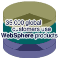

| system |
| home page |
|  |
| org) regarding escaping of command line args on Win32. . Apache HTTPD Project - The Apache HTTP Server Project Essentials About License FAQ SecurityReports Download. 0 Get Involved Mailing Lists Bug Reports Developer Info Subprojects Docs Test Miscellaneous Contributors Awards SupportWebring The Number One HTTP Server On The Internet Apache has been the most popular web server on the Internet since April of 1996. The Apache HTTP Server Project is an effort to develop and maintain an open-source HTTP server for various modern desktop and server operating systems, such as UNIX and Windows NT. |
| Form for FeedBack on NCSA HTTPd Beta Release information Information on Security issues. . The NCSA HTTPd Home Page Welcome to the NCSA HTTPd Home Page Hoohoo was a server run by the NCSA HTTPd Development Team to test and demonstrate the latest versions of NCSA HTTPd, and to provide documentation for it. We recommend that you check out the Apache server , instead of installing our server. The NCSA HTTPd Development Team was part of the Software Development Group of the National Center for Supercomputing Applications at the University of Illinois at Urbana - Champaign, IL, USA. |